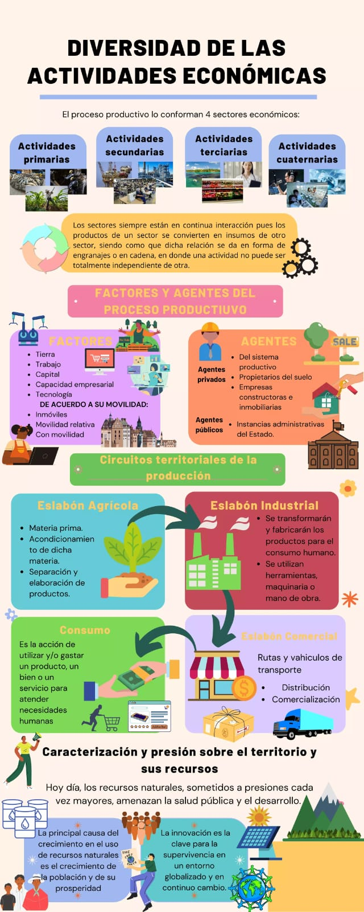

Geografia Humana y Economica
Ahora continuaremos con la Geografía Económica
Ahora continuaremos con la Geografía Económica

La geografía económica es la rama de la geografía que estudia la distribución de actividades económicas y recursos en el espacio, así como las interrelaciones entre las actividades humanas y su entorno. Analiza factores como la localización de industrias, el comercio, la agricultura y el impacto de la globalización en las economías locales y regionales.
Geografía económica
Te explicamos qué es la geografía económica y cuál es su objeto de estudio. Además, sus ramas de estudio y otras características.

¿Qué es la geografía económica?
La geografía económica es una rama de la geografía humana que centra su estudio en la relación entre las dinámicas de producción y consumo propias de la economía, y los lugares geográficos en los que éstas tienen lugar.
Dicho de otro modo, intenta cruzar la actividad económica con el emplazamiento geográfico para poder, entre otras cosas, analizar dónde se encuentran las determinadas actividades económicas y por qué.
El enfoque de la geografía económica parte de la idea de que los consumidores somos móviles y los bienes generalmente se producen en una misma ubicación. Sin embargo, existen dinámicas de transporte que le llevan a ciertos nichos de mercado la materia que requieren para consumirla.
Es decir, que se interesa por los desplazamientos geográficos propios del proceso productivo, ya sea a nivel nacional, regional o global. Presta atención, además, a los distintos sistemas económicos que existen.

Objeto de estudio de la geografía económica
Los temas de estudio de la geografía económica pueden ser sumamente diversos, tanto como lo es la complejidad del circuito económico en el mundo. Sin embargo, podemos resumirlos en:
1. El modo de interrelación entre el medio ambiente y la actividad económica.
2. La expansión y distribución de la industria en las diversas regiones del globo.
3. Las tendencias específicas del comercio nacional y del comercio internacional.
4. Las economías de las poblaciones humanas, organizadas según etnicidad, religión, etc.
5. Los patrones de transporte, telecomunicaciones e intercambio de bienes y servicios.
Importancia de la geografía económica
En un mundo globalizado y diverso como el contemporáneo, la geografía económica es una de las principales herramientas científicas para encarar el complicado flujo de las materias primas, los activos industriales, los capitales y todos los actores económicos internacionales del planeta.
Además, ofrece la perspectiva ideal para comprender los modos de explotación económica y comercial que emprenden los Estados, influidos siempre por su ubicación geográfica y por su posicionamiento dentro de los bloques económicos, políticos, financieros y socio-culturales en que el mundo se divide y organiza.

Ciencias auxiliares de la geografía económica
La geografía económica no es una disciplina cerrada en sí misma, sino que a menudo colabora con y se nutre de otras ciencias sociales y otras ramas de la propia geografía, que principalmente son:
1.La economía: Para identificar y estudiar los procesos productivos y de satisfacción de necesidades humanas
2.La historia: A la hora de comprender la evolución económica del mundo y el modo en que las tendencias socioeconómicas y socioculturales se estructuran en el tiempo
3.La demografía: Para emplear el análisis poblacional y la constitución del consumo tanto individual como colectiva
4.La política: Útil a la hora de abordar las dinámicas de poder de la humanidad, principales causantes de cualquier configuración social y geográfica
5.Las ciencias de la Tierra: Para comprender dónde, cómo y por qué se hallan los recursos (la materia prima, por ejemplo) en las diversas regiones del planeta.
Características de la geografía económica
La geografía económica persigue una perspectiva multidisciplinaria, que aspira a encarar fenómenos complejos de la economía y las sociedades, siempre desde la perspectiva espacial. Su preocupación fundamental es la distribución de las actividades económicas en la superficie terrestre, y el modo en que ésta influye a otras áreas humanas.
Por ello la localización, el flujo (transporte) y la organización demográfica son elementos muy recurrentes en sus análisis, así como modelos matemáticos y estadísticos que permitan visibilizar las tendencias históricas, políticas y culturales de la geoeconomía.
Sector primario, secundario y terciario: Qué son, características y ejemplos
Definición: El sector primario se encarga de la extracción y recolección de recursos naturales. Este sector incluye actividades que obtienen materias primas directamente de la naturaleza.
Actividades Principales:
1.Agricultura: Cultivo de plantas y producción de alimentos.
2.Ganadería: Cría de animales para carne, leche y otros productos.
3.Pesca: Captura de peces y mariscos.
4.Minería: Extracción de minerales y recursos naturales como carbón, petróleo y metales.
5.Silvicultura: Gestión y explotación de bosques para madera y otros productos forestales.
Características:

Definición: El sector secundario se ocupa de la transformación de materias primas en productos manufacturados. Es el sector que convierte los recursos naturales del sector primario en bienes acabados.
Actividades Principales:
1.Industria Manufacturera: Producción de bienes como automóviles, ropa, maquinaria y electrodomésticos.
2.Construcción: Edificación de infraestructuras como edificios, carreteras y puentes.
3.Energía: Producción y procesamiento de energía, como electricidad y combustibles.
Características:
Definición: El sector terciario se centra en la prestación de servicios en lugar de la producción de bienes. Este sector apoya y complementa a los sectores primario y secundario.
1.Comercio: Venta y distribución de bienes, tanto al por menor como al por mayor.
2.Servicios Financieros: Banca, seguros y servicios de inversión.
3.Educación y Salud: Escuelas, universidades, hospitales y clínicas.
4.Turismo y Entretenimiento: Agencias de viajes, hoteles, restaurantes y actividades recreativas.
5.Transporte y Logística: Servicios de transporte de mercancías y personas, y gestión de cadenas de suministro.
La Geografía Economica es el estudio de cómo las actividades económicas, como la producción, distribución y consumo de bienes y servicios, se distribuyen y organizan en el espacio. Examina la influencia de factores naturales, tecnológicos, y políticos en el desarrollo económico y en las desigualdades regionales.
La geografía económica es la rama de la geografía humana que relaciona y simpatiza la actividad económica con el lugar del mundo en que se lleva a cabo.
La Geografía Humana es importante porque ayuda a entender cómo las acciones humanas afectan y son afectadas por su entorno geográfico, y cómo se configuran las distribuciones socioculturales y económicas en el espacio.
Es el sector de la economía que comprende justamente el aprovechamiento de los recursos agrícolas, pecuarios, pesqueros, forestales etcétera.
Es el sector de la industria que transforma la materia prima, extraída o producida por el sector primario, en productos de consumo, o en bienes de equipo.
Es aquel segmento económico que engloba a todas aquellas actividades que no producen bienes materiales, sino servicios destinados a la satisfacción de las necesidades de los consumidores, como la banca, el turismo, la educación y la salud.
Vamos a hacer unas preguntas el cual tienes que responder verdadero o flaso segun el enunciado.
Verdadero
Falso
Falso
Falso
Falso
Obra publicada con Licencia Creative Commons Reconocimiento Compartir igual 4.0